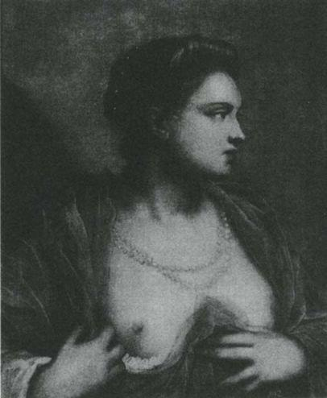
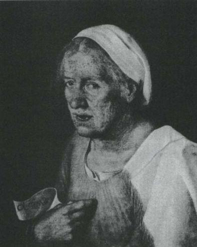
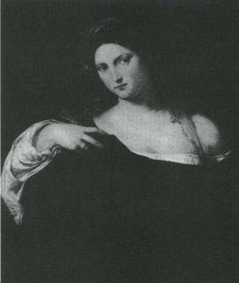
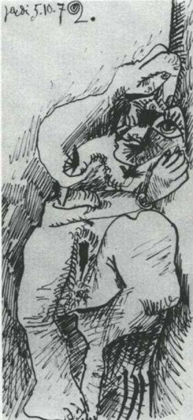

Picasso'nun yaşlılık döneminde, yetmiş ile doksan yaşları arasında yaptığı resimler, büyük ölçüde ancak ölümünden ve bu kitabın yazılmasından sonra sergilendi. Bu resimlerin çoğu, cinsel varlıklar olarak gözlemlenen ya da hayal edilen kadınları ya da çiftleri konu alır. W.B. Yeats'in son şiirleriyle bunlar arasındaki koşutluğa daha önce de dikkat çekmiştim:
Korkunç geliyor sana bu ihtiyar halimde
Şehvet ve azgınlığın dört dönmesi çevremde;
Gençken böyle bir bela değildi bunlar başıma;
Başka neyim kaldı artık koyacak şarkılarıma?
Bu saplantı nasıl olup da resim ortamına bu kadar uyuyor? Nasıl oluyor da resim onu bu kadar anlamlı kılıyor?
Picasso burada da bizi sanatın doğasını sorgulamaya zorluyor; bu nedenle o vahşi, ehlileştirilemeyen ve korkusuz yaşlı adama bir kez daha minnet duymalıyız.
Yukarıdaki soruya bir yanıt aramaya girişmeden önce, bazı olasılıkları ortadan kaldıralım. Başka durumlarda getirecekleri ne olursa olsun, Freudcu çözümleme burada pek işimize yaramaz, çünkü temelde simgecilik ve bilinçdışıyla ilgilidir. Oysa benim yönelttiğim soru, doğrudan bedensel ve açıkça bilinçli olana dair.
Bence müstehcenle uğraşan —ünlü Bataille gibi— felsefecilerin de bize fazla bir yararı olmaz; çünkü yaklaşımları, değişik bir biçimde de olsa, bu sorunun yanıtına katkıda bulunamayacak ölçüde edebi ve psikolojiktir. Bizim içinse yalnızca resimlerdeki boyaya ve vücutların görünüşüne bakmak yeter.
Boyayla yapılan ilk imge, hayvan vücutlarını gösteriyordu. O günden bu yana dünyadaki resimlerin çoğu şu ya da bu türden vücutları göstermiştir. Bunu, manzara resimlerini ya da daha sonraki türleri küçümsemek ya da bir hiyerarşi oluşturmak için söylemiyorum. Bununla birlikte, resmin ilk, temel amacının orada bulunmayan bir şeyin varlığını büyülü bir biçimde canlandırmak olduğunu hatırlarsak, çoğunlukla canlandırılan şeylerin vücutlar olmasında şaşılacak bir yan olmadığını görürüz. Toplu ya da bireysel yalnızlığımızda, bizi teselli etmek, güçlendirmek, cesaretlendirmek ya da esinlemek için gereksindiğimiz, onların varlığıdır. Resimler gözlerimize arkadaşlık eder. Arkadaş da çoğu zaman bir vücuda sahiptir.
Şimdi —aşırı yalınlaştırmayı göze alarak— değişik sanat dallarına bir bakalım. Anlatı öykülerde eylem bulunur: Bu öykülerin zaman içinde bir başlangıcı ve sonu vardır. Şiir yüreğe, yaraya, ölülere, varlığını paylaşılan öznellik alanımızda bulan herşeye seslenir. Müzik verili olanın ardında yatanlarla ilgilidir: sözsüz, görünmez, kısıtlanmamış olanla. Tiyatro geçmişi yeniden canlandırır. Resim bedensel, elle tutulur, hemen orada olan şey hakkındadır. (Soyut sanatın karşısına çıkan yenilmez güçlük, bunu aşmaktı.) Resme en yakın sanat danstır. Bunların her ikisi de bedenden kaynaklanır, bedeni akla getirir; her ikisi de sözcüğün ilk anlamında fizikseldir. Aralarındaki önemli fark şudur: Anlatı ve tiyatro gibi dans da bir başlangıcı ve sonu olduğundan zaman içinde varolur; oysa resim anlıktır. (Heykel kendi başına başka bir kategori oluşturur: Resimden daha açık bir biçimde durağandır, sıklıkla renksizdir ve çoğu zaman çerçevesiz olduğu için de daha az yakındır bize —bütün bunlar başka bir incelemeyi gerektirecek şeyler.)
Öyleyse resim elle tutulur, anlık, değişmeyen, sürekli, fiziksel bir varlık sunar. Sanatların en doğrudan duyumsal olanıdır. Beden bedene. Bu bedenlerden biri, seyircinin bedenidir. Ancak bu her resmin amacının duyumsallık olduğu anlamına gelmez: Pek çok resim dünyevi zevklerden uzak amaçlar taşır. Duyumsal olandan çıkarımlanan iletiler, çağdan çağa, ideolojiye bağlı olarak değişir. Aynı biçimde cinslerin rolü de değişir. Örneğin resimler kadınları edilgin cinsel nesne, etkin cinsel eş, korkulacak birisi, tanrıça ya da sevilen insan olarak sunabilir. Ancak, ne yönde olursa olsun resim sanatının kullanımı yoğun bir duyumsal yükle başlar ve bu yük sonra şu ya da bu yöne aktarılır. Resmedilmiş bir kafatası, bir zambak, bir halı, kırmızı bir perde, bir ceset düşünün — bunların her birinde, sonuç ne olursa olsun, (eğer resim canlıysa) işin başında duyumsal bir şok yaşanır.
Duyumsallıktan söz eden kişi — insan bedeni ve insan imgelemi söz konusu olduğu sürece — cinsellikten söz ediyor demektir. İşte resim yapmak da bu noktada gizemli olmaya başlar.
Görsellik, pek çok hayvan ve böceğin cinsel yaşamında önemli bir rol oynar. Renk, biçim ve göze seslenen hareketler, karşı cinsi uyarır ve çeker. İnsanlar içinse görsel olanın rolü daha da önemlidir çünkü belirtkeler yalnızca reflekslere değil, imgeleme de seslenir. (Görsellik, kadın cinselliğine göre erkek cinselliğinde daha büyük bir rol oynuyor olabilir; ancak modern imge-yaratımında cinsiyetçi geleneklerin ağır basması nedeniyle bunu kesin olarak belirlemek zordur.)
Meme, meme ucu, kasıklar ve karın cinsel arzunun doğal görsel odaklarıdır; bunların doğal renkleri de çekicilik güçlerini arttırır. Bu söylediklerim her zaman bu açıklıkta dile getirilmiyorsa —bunu yapmak halka açık yerlere çiziktirilen duvar yazılarına bırakılıyorsa—, Püriten ahlakın ağır basmasındandır bu. Gerçek şudur ki hepimiz böyle yaratılmışızdır. Başka dönemlerde başka kültürler bu bölgelerin çekiciliğini ve merkeziliğini kozmetikler yardımıyla vurgulamışlardır. Vücudun doğal rengini daha da belirginleştiren kozmetiklerdir bunlar.
Resmin bedene en uygun sanat biçimi olduğunu, bedenin de, temel üreme işlevini yerine getirebilmek için cinsel çekicilik taşıyan görsel belirtkeleri ve uyararıları kullandığını kabul edersek, resmin tahrik edici olmaktan neden hiçbir zaman uzaklaşamadığını anlarız.
Tintoretto'nun Çıplak Göğüslü Kadın tablosunu ele alalım. Göğüslerini açan bu kadın imgesi, resim yetisinin, resim becerisinin bir temsilidir de. En basit düzeyde bu resim (tüm sanatsallığıyla) bir meme ucuyla çevresindeki halkaya dikkat çekerek (bütün kışkırtıcılığıyla) doğayı taklit etmektedir. Aynı amaç için kullanılmış çok değişik türde iki "renklendirme".
Bununla birlikte, meme ucu nasıl vücudun yalnızca bir parçasıysa, göğsün açılmış olması da resmin yalnızca bir parçasıdır. Resim aynı zamanda kadının dalgın bakışı, ellerinin pek de dalgınlıkla yapılmamış hareketi, yarı şeffaf giysileri, incileri, saçının toplanışı, ensesinde çözülmüş saçları, arkasındaki ten rengi duvar ya da perde ve resmin her yerinde görülen Venedikliler'in pek sevdikleri yeşil ve pembe tonları arasındaki o oynaşmadır. Bütün bu öğeler aracılığıyla, resmedilen kadın, yaşayan bir kadının görsel araçlarıyla baştan çıkarır bizi. Her ikisi de aynı görsel işvebazlığı paylaşırlar.

121 Tintoretto. Çıplak Göğüslü Kadın.
Tintoretto'nun bu adla çağrılmasının nedeni, babasının kumaş boyacısı olmasıydı. Babasının işinden bir ölçüde uzak ve sanat alanının içinde olan oğul, her ressam gibi bedenlerin, tenin ve organların "renklendiricisi"ydi.
Tintoretto'nun yanına, Giorgione'nin bu tablodan yaklaşık yarım yüzyıl önce yapılmış Yaşlı Kadin'ını koyalım. Yanyana konduğunda bu iki yapıt bize boyayla ten arasındaki yakın ve eşsiz ilişkinin mutlaka cinsel kışkırtıcılık demek olmadığını gösteriyor. Tam tersine Giorgione'nin teması, kışkırtma gücünün yitirilişidir.

122 Giorgione. Yaşlı Kadın. yak. 1569
Piskoposa rastladım yürürken yolda
Pekçok şey söyledik ben de, o da
"Pörsüyüp sarkmış o memeler artık,
Yakında kan kalmayacak damarlarında;
Cennetsi bir mekan edin kendine bari,
Vazgeç yaşamaktan kokuşmuş bir ahırda."
"Güzelle kokuşmuş aslında aynı soydan,"
diye bağırdım. "Güzel edemez ki kokuşmuş olmadan."
Bununla birlikte sözcüklerle yapılan hiçbir betimleme —Yeats'in dizeleri bile— sağ eli, diğer resimdekine benzeyen, yine de çok farklı bir hareket yapan yaşlı kadının tenindeki hüznü bu tablo kadar iyi kaydedemez. Neden? Boya o ten olup çıktığı için mi? Boyanın ten olup çıktığı neredeyse doğru, ama tam olarak değil. Daha ziyade boya o tenin ileticisi, ağıtı olduğu için.
Son olarak da bu iki tabloya, Titian'ın (alyansı hariç) tüm mücevher ve süslerinden arınmış bir kadını gösteren Dünyanın Boşluğu tablosunu ekleyelim. Boş bularak bir kenara attığı "cici biciler"i, elinde tuttuğu karanlık aynada yansır. Ancak burada, en az uygun düşen bağlamda bile, kadının başı ve omuzları istenirlik çağrısında bulunmaktadır. Bu çağrı da boyadan gelir.
Boyayla ten arasındaki o çok eski gizemli sözleşme böyledir işte. Büyük Madonna ve Çocuk tablolarına o derin duyumsal güvenliği ve hazzı kazandıran bu sözleşmedir; büyük Pietalara yaslarının tüm ağırlığını —tenin yeniden yaşayacağına ilişkin o umutsuz arzunun korkunç ağırlığını— katan da odur. Boya, bedene aittir.
Renklerin maddesinde bir cinsellik yükü vardır. Manet'nin Kırda Öğle Yemeği'ni (bu, Picasso'nun son döneminde defalarca kopya ettiği bir tablodur) yaparken kullandığı boyanın göze batıcı solukluğu, otlar üzerindeki kadınların göze batıcı çıplaklığını yalnızca taklit etmekle kalmaz, o çıplaklığın ta kendisi olur.

123 Titian. Dünyanın Boşluğu. 1515
Tablonun gösterdiği, gösterilen bedendir.
Resimle bedensel arzu arasındaki, kilise ve müzelerden, akademi ve mahkemelerden bulunup çıkarılması gereken yakın bağıntının (ayrım çizgisinin) Görme Biçimleri adlı kitabımda da belirttiğim gibi, yağlıboya tabloların özgül öykünmeci dokusuyla pek ilişkisi yoktur. Bu bağıntı, resim ya da suluboya yapma edimiyle başlar. Önemli olan resmedilmiş bedenlerin yanıltıcı dokunabilirliği değil, bunların, gerçek bedenlerinkiyle bu kadar şaşırtıcı bir suçortaklığına giren görsel belirtkeleridir.
Belki şimdi Picasso'nun hayatının yirmi yılı boyunca ne yaptığını, ne yapmaya itildiğini ve daha önce —beklenebileceği gibi— hiç kimsenin pek yapmamış olduğu neleri gerçekleştirdiğini biraz daha iyi anlayabiliriz.
Picasso yaşlanıyordu, her zamanki kadar gururluydu, kadınları hâlâ her zamanki kadar seviyordu ve kendi görece iktidarsızlığının saçmalığıyla yüzyüze gelmişti. Dünyanın en eski şakalarından biri olan bu durum onda acıya ve saplantıya —aynı zamanda büyük gururuna yönelen bir tehdide— dönüştü.
Aynı zamanda dünyadan alışılmadık ölçüde yalıtılmış bir yaşam sürüyordu; önce de belirttiğim gibi, bütünüyle kendisinin seçmediği, devasa ününün sonucunda gelişen bir yalıtılmışlıktı bu. Bu yalıtılmışlığın getirdiği yalnızlık, Picasso'nun saplantısından kurtulmasına yardım etmedi; tam tersine onu farklı bir ilgi alanına yönelmekten giderek daha çok uzaklaştırdı. Hiçbir kaçışı olmayan bir tek yönlülüğe, monologa dönüşen bir tür maniye mahkum oldu. Bu monolog resim uygulamasına ve takdir ettiği, sevdiği ya da kıskandığı eskinin ölmüş ressamlarına yönelikti. Cinsellik üzerine bir monologdu bu. Havası yapıttan yapıta değişiyordu, ama konusu değişmiyordu.
Rembrandt'ın son tabloları —özellikle de kendi portreleri— sanatçının daha önce yapmış ya da resmetmiş olduğu herşeyi sorgulamaları açısından ünlüdür. Bunlarda herşey başka bir ışık altında görülür. Neredeyse Picasso kadar uzun yaşamış olan Titian, ömrünün sonuna doğru Marsyas'ın Derisinin Yüzülmesi’ni ve Venedik'teki Pieta'yı yaptı: tenin yerine geçen boyanın canlılığını yitirdiği iki olağanüstü son yapıt. Gerek Rembrandt gerek Titian'da erken ve geç dönem yapıtları arasındaki karşıtlık çok belirgindir. Ancak temeli kısaca açıklanamayacak bir süreklilik de söz konusudur. Resim dilinin, kültürel atıfların, dinin ve toplumsal yaşamda sanatın rolünün sürekliliğidir bu. Bu süreklilik yaşlı ressamların umarsızlığını —bir ölçüde— niteleyip avutuyordu; hissettikleri acılı yalnızlık, hüzünlü bir bilgeliğe ya da yakarışa dönüşüyordu.
Picasso'da böyle olmadı; belki bunun nedeni, birçok şeyin yanı sıra, bu tür bir sürekliliğin bulunmamasıydı. Bu sürekliliği kesintiye uğratmak için sanat alanında bizzat kendisi çok şey yapmıştı. Putkırıcı olduğundan ya da geçmişe tahammül edemediğinden değil, kültürlü sınıflardan devralınan yarı-gerçeklerden nefret ettiği için. Bu sürekliliği gerçek adına kesintiye uğratmıştır o. Ne var ki kesintiye uğrattığı şey, onun ölümünden önce gelenekle buluşacak zamanı bulamadı. Son döneminde Velazquez, Poussin, Delacroix gibi eski ustalardan kopyalar yapması kendine arkadaş bulma, kesintiye uğramış bir sürekliliği yeniden kurma çabasıydı. Bu ustalar onun kendilerine katılmasına izin verdiler. Ama onlar Picasso'ya katılamadılar.
Böylece Picasso yalnız kaldı —yaşlıların hep kaldığı gibi. Ancak yalnızlığından hiç kurtulamadı, çünkü tarihsel bir kişi olarak çağdaş dünyadan, ressam olarak da sürekli resim geleneğinden kopmuştu. Hiçbir şey ona yanıt vermiyordu, hiçbir şey onu kısıtlamıyordu, böylece saplantısı bir çılgınlığa dönüştü: bilgeliğin karşıtına.
Yaşlı bir adamın artık yapamadığı bir şeyin güzelliğine karşı duyduğu çılgın bir saplantı. Bir fars. Bir öfke. Peki bu çılgınlık kendini nasıl dışavuruyor? (Her gün çizim ya da resim yapamasaydı, ya çıldırır ya da ölürdü — hâlâ yaşamakta olan bir insan olduğunu kendine kanıtlamak için bir ressamın yaptığı hareketleri tekrarlaması gerekiyordu.) Bu çılgınlık da, doğrudan boyayla ten ve bunlarda ortak olan göstergeler arasındaki gizemli bağa dönüşerek dışavurur kendini.
Sınırsız bir erojen bölge olarak boyanın çılgınlığıdır bu. Ancak bu ortak göstergeler, karşılıklı arzuyu göstermek yerine, artık cinselliğin mekanizmasını sergiler. Kaba bir biçimde. Kızgınlıkla. Küfürle. Bu kendi gücüne ve kendi anasına küfreden resimdir. Bir zamanlar kutsal saydığına hakaret eden resimdir. Daha önce hiç kimse, müstehcen şeyleri resmetmekten farklı olarak, resmin kendi kökeni konusunda müstehcen olabileceğini hayal etmemişti. Picasso bunun nasıl olabileceğini keşfetti.
Bu son yapıtları nasıl değerlendirmeli? Bunun için henüz vakit çok erken. Bu tablolara Picasso'nun sanatının doruğuymuş gibi yaklaşanlar, onun çevresinde dolanan kayıt tutucuların hep yaptığı gibi saçma bir tutum içindeler. Bu yapıtları yaşlı bir adamın yinelenip duran hezeyanları olarak bir yana atanlarsa, ne aşk ne de insan kaderi hakkında pek bir şey bilmiyorlar demektir.
İspanyollar’ın küfürbazlıklarından gurur duyduklarını herkes bilir. Ettikleri küfürlerin yaratıcılığına hayrandırlar ve küfretmenin bir onur belirtisi, hatta onurluluğun kanıtı olabileceğini bilirler.
Daha önce kimse boyayla küfretmemişti.

124 Picasso. Yatan nü. 1972